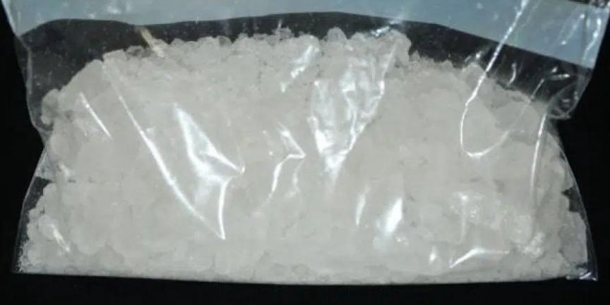
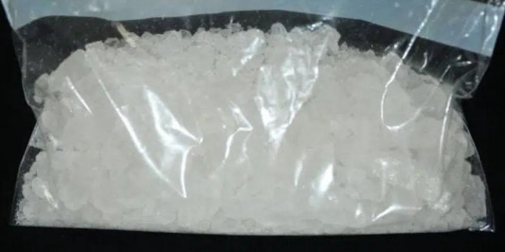

California Woman Imprisoned for Distributing Drugs
~2 min read | Published on 2024-02-24, tagged Darkweb-Vendor, Sentenced using 290 words.
A California woman was sentenced to 66 months in federal prison for conspiring in the distribution of methamphetamine and cocaine through the dark web.

Helen Nguyen, 31, sold various drugs, including counterfeit Adderall pills, Xanax, meth, and cocaine through the dark web under the "Dirtyrugs" vendor profile.
The DEA launched investigations into Dirtyrugs in October 2021. The investigators made four undercover purchases from Dirtyrugs during the investigations. One of the orders resulted in the delivery of 50 grams of meth at an address used by the investigating agents.
Further investigations revealed that Nguyen had mailed the drug packages received by the investigators. The investigators acquired a search warrant for Nguyen’s iCloud account and recovered conversations linking her to Dirtyrugs. The investigators were also able to identify her accomplice, 30-year-old James Lau.
The investigators executed search and arrest warrants against Nguyen and Lau on June 8, 2022. The investigators found Nguyen as she was about to leave her residence. A search of her vehicle resulted in the discovery of undisclosed quantities of a variety of drugs, including meth, Adderall pills, Xanax, and Farmapram. A search of her home resulted in the seizure of shipping and packaging material.
At Lau’s residence, the investigators seized one kilogram of cocaine, counterfeit Adderall pills, and ecstasy pills. On being questioned, Lau said he had been sourcing the drugs Nguyen distributed. The only drug Nguyen acquired by herself was meth.
Nguyen and Lau pleaded guilty to conspiracy to distribute and possession with intent to distribute methamphetamine in 2023.
Lau was sentenced to 44 months in prison and 2 years of supervised release in January 2024.
Nguyen was sentenced to five years and six months in prison on February 21, 2024. Nguyen’s prison sentence will be followed by three years of supervised release.

Helen Nguyen, 31, sold various drugs, including counterfeit Adderall pills, Xanax, meth, and cocaine through the dark web under the "Dirtyrugs" vendor profile.
The DEA launched investigations into Dirtyrugs in October 2021. The investigators made four undercover purchases from Dirtyrugs during the investigations. One of the orders resulted in the delivery of 50 grams of meth at an address used by the investigating agents.
Further investigations revealed that Nguyen had mailed the drug packages received by the investigators. The investigators acquired a search warrant for Nguyen’s iCloud account and recovered conversations linking her to Dirtyrugs. The investigators were also able to identify her accomplice, 30-year-old James Lau.
The investigators executed search and arrest warrants against Nguyen and Lau on June 8, 2022. The investigators found Nguyen as she was about to leave her residence. A search of her vehicle resulted in the discovery of undisclosed quantities of a variety of drugs, including meth, Adderall pills, Xanax, and Farmapram. A search of her home resulted in the seizure of shipping and packaging material.
At Lau’s residence, the investigators seized one kilogram of cocaine, counterfeit Adderall pills, and ecstasy pills. On being questioned, Lau said he had been sourcing the drugs Nguyen distributed. The only drug Nguyen acquired by herself was meth.
Nguyen and Lau pleaded guilty to conspiracy to distribute and possession with intent to distribute methamphetamine in 2023.
Lau was sentenced to 44 months in prison and 2 years of supervised release in January 2024.
Nguyen was sentenced to five years and six months in prison on February 21, 2024. Nguyen’s prison sentence will be followed by three years of supervised release.